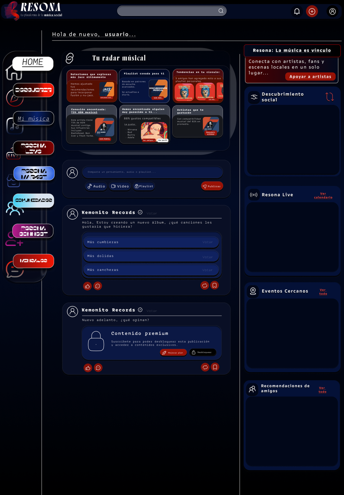
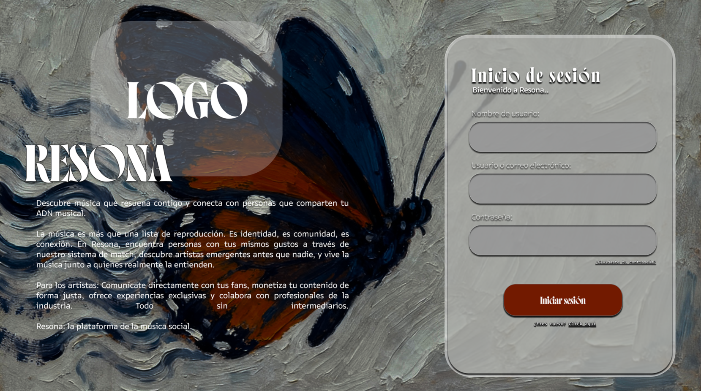
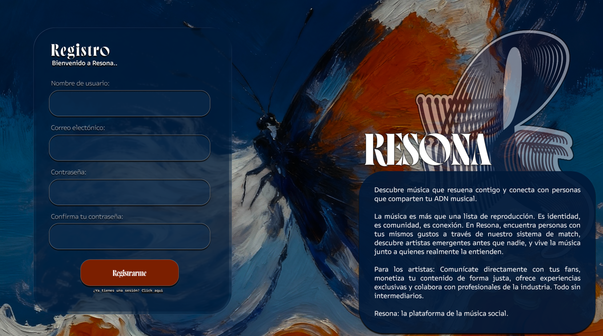

← Todos los proyectos
Proyecto / 09
Resona
La música como punto de encuentro
Concepto de plataforma social alrededor de la música: descubrimiento, comunidad y espacios para artistas. El repositorio incluye un prototipo web de acceso y registro.

01 / Propósito
Una idea llevada a la práctica.
Propuesta de producto y prototipo.
Áreas y tecnologíasDiseño de producto · JavaScript
Esta ficha presenta el alcance documentado y material visual seleccionado. El código de desarrollo y los datos privados permanecen fuera de esta vitrina.
02 / Lo que hace
Funciones principales
- Maquetas de radar musical y descubrimiento social.
- Exploración de espacios para artistas y comunidad.
- Prototipo de inicio de sesión y registro.
03 / Vista del proyecto
Así toma forma.
Maquetas históricas de la propuesta de Resona de 2025. Son conceptos visuales, no funciones terminadas del prototipo.


04 / Explorar